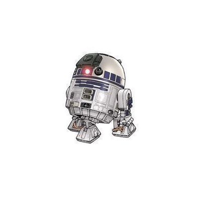

Luke Skywalker
Luke SkywalkerEspèce: Humain
Planète: Tatooine
Skywalker est un héros de la Rébellion et un Jedi. Il a détruit l'Étoile de la Mort et a aidé à vaincre l'Empire
Galactique.
 Princesse Leia
Princesse LeiaEspèce: Humaine
Planète: Alderaan
La Princesse Leia est une leader de la Rébellion et une figure clé dans la lutte contre l'Empire. Elle est
également la sœur jumelle de Luke Skywalker.
 Han Solo
Han SoloEspèce: Humain
Planète: Corellia
Han Solo est un contrebandier et un pilote talentueux. Il est le capitaine du Faucon Millenium et un héros de la
Rébellion.
 Dark Vador
Dark VadorEspèce: Humain
Planète: Tatooine
Dark Vador est un Seigneur Sith et un commandant de l'Empire Galactique. Il est également le père de Luke
Skywalker et de la Princesse Leia.
 Yoda
YodaEspèce: Inconnu
Planète: Inconnue
Yoda est un Maître Jedi légendaire. Il a formé de nombreux Jedi, dont Luke Skywalker, et est connu pour sa
sagesse et sa maîtrise de la Force.
 Obi-Wan Kenobi
Obi-Wan KenobiEspèce: Humain
Planète: Stewjon
Obi-Wan Kenobi est un Maître Jedi et un mentor pour Luke Skywalker. Il a joué un rôle clé dans la chute de
l'Empire et la formation de Luke.
 Chewbacca
ChewbaccaEspèce: Wookiee
Planète: Kashyyyk
Chewbacca est un Wookiee et le copilote du Faucon Millenium. Il est un fidèle ami de Han Solo et un héros de la
Rébellion.

R2-D2
Espèce: Droïde
Planète: Naboo
Espèce: Droïde
Planète: Naboo
R2-D2 est un droïde astromécano et un héros de la Rébellion. Il a joué un rôle clé dans de nombreuses missions
et est un ami fidèle de Luke Skywalker.
 C-3PO
C-3POEspèce: Droïde
Planète: Tatooine
C-3PO est un droïde protocolaire et un héros de la Rébellion. Il est connu pour sa maîtrise de nombreuses
langues et son amitié avec R2-D2.
 Boba Fett
Boba FettEspèce: Humain
Planète: Kamino
Boba Fett est un chasseur de primes et un clone de Jango Fett. Il est connu pour son armure distinctive et
son rôle dans la capture de Han Solo.
 Empereur Palpatine
Empereur PalpatineEspèce: Humain
Planète: Naboo
L'Empereur Palpatine est le dirigeant de l'Empire Galactique et un Seigneur Sith. Il est connu pour sa
manipulation et son rôle dans la chute de la République.
 Jabba le Hutt
Jabba le HuttEspèce: Hutt
Planète: Nal Hutta
Jabba le Hutt est un seigneur du crime et un puissant chef de la pègre. Il est connu pour son rôle dans la
capture de Han Solo et son opposition à la Rébellion.
 Storm trooper
Storm trooperEspèce: Humain
Planète: Inconnue
Les stormtroopers sont les soldats d'élite de l'Empire Galactique. Ils sont connus pour leur armure blanche
distinctive et leur loyauté envers l'Empire.
 Pilote de X-Wing
Pilote de X-WingEspèce: Humain
Planète: Serenno
Les pilotes de X-Wing sont des héros de la Rébellion. Ils sont connus pour leurs compétences de pilotage et
leur rôle dans la destruction de l'Étoile de la Mort.
 Greedo
GreedoEspèce: Rodien
Planète: Rodia
Greedo est un chasseur de primes et un criminel. Il est connu pour sa confrontation avec Han Solo dans la
cantina de Mos Eisley.
 Amiral Ackbar
Amiral AckbarEspèce: Mon Calamari
Planète: Mon Cala
L'amiral Ackbar est un stratège militaire et un héros de la Rébellion. Il est connu pour son rôle dans la
bataille de Endor et sa célèbre phrase ""C'est un piège !